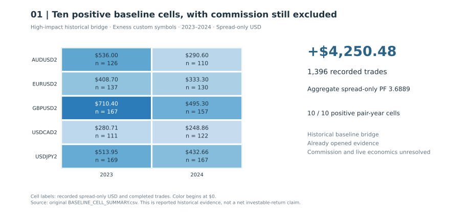

News-Release Trading: why execution ended the experiment
A historically promising strategy became impractical when traded around real news releases.
Decision. Shelved because live spreads, fills and slippage across brokers made the trading conditions unworkable.
Main limitation. This is a practical execution decision, not a verified broker-by-broker measurement of live trading costs. The historical tests used narrower cost assumptions.
Why I shelved this
The problem was execution, not a lack of interesting historical signals. Around scheduled releases, spreads widened, orders filled away from intended prices and slippage consumed too much of the move. Those were the conditions faced across the brokers tried.
That was enough to stop pursuing the strategy. It does not establish that every news-trading approach is unworkable, and there is no new verified broker-level slippage study behind this decision.
Research evidence: Execution rules
What the strategy attempted
Before a scheduled release, the strategy placed triggers on both sides of the market. A sharp move could activate one side; a stop-out could leave the opposite trigger available. Bid and Ask prices, order timing and broker fills are central to whether such a setup can be traded.

Conceptual order mechanics, not a measured historical fill or price path. · Open figure
Research evidence: Execution rules
What the backtest could, and couldn't, show
The 2023–2024 high-impact baseline recorded 1,396 trades and +$4,250.48 under historical spread-only accounting, before commission. That justified further investigation; it did not prove that trades could be filled at those prices during live releases.
A separate spread-filter comparison removed profitable trades rather than improving the historical result. The tested interventions did not solve the execution conditions that ultimately mattered.


Historical spread-only outcomes must not be read as independently verified live profitability. · Open figure
Research evidence: Historical baseline
Data and verification
The public figures can be rebuilt from released aggregates. The original market backtests require private quotes and implementations, so they cannot be independently rerun from this website.
Complete research record · Published aggregate data · Reproduce the figures